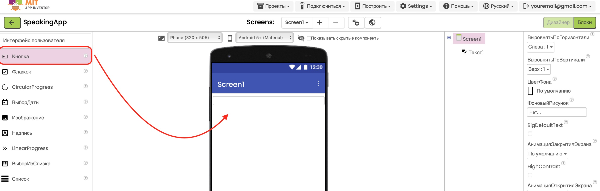
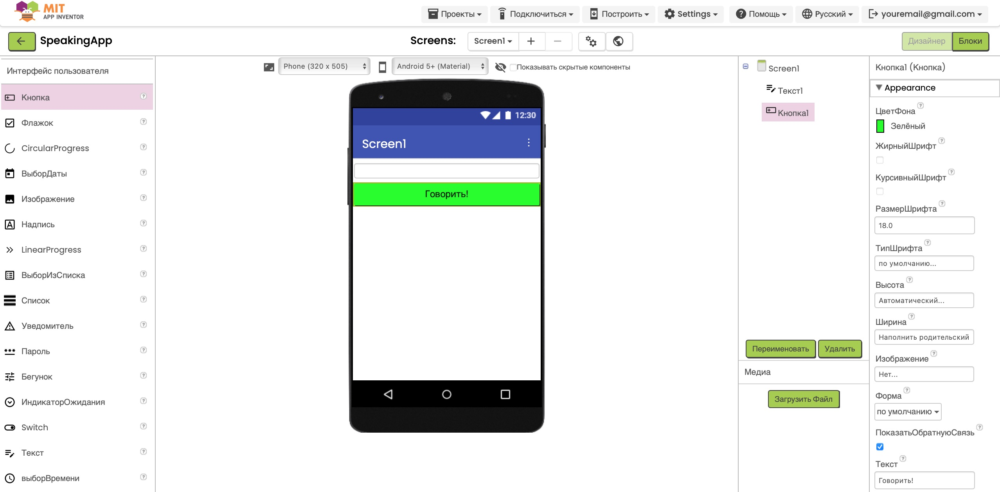

Проект "Говорящее приложение"
Цель: Создать приложение, которое превращает текст в речь! Напиши что угодно, и приложение произнесёт это вслух.
Этот проект поможет изучить работу с компонентом "Текст в речь" (Text to Speech), получение текста от пользователя через текстовое поле (TextBox) и управление событиями кнопки для запуска озвучивания.
Чему ты научишься:
- Использовать компонент "Текст в речь"
- Получать текст от пользователя
- Управлять громкостью и скоростью речи
1
Добавь текстовое поле
2
Добавь кнопку "Говорить"
3
Добавь компонент "Текст в речь"
4
Соедини блоки команд
5
Тестируй приложение
Шаг 1: Добавление текстового поля
- Откройте MIT App Inventor.
- Нажмите на кнопку "Create Apps!"
- Войдите в свою учетную запись.
- Выберите "New Project" в верхнем меню.
- Введите название проекта "SpeakingApp" и нажмите OK.
- Для начала добавим текстовое поле. Из палитры User Interface перетащите компонент TextBox (Текст) под заголовок.
-
Настройте свойства текстового поля:
• Width (Ширина): Fill parent (Заполнить родителя)
• Height (Высота): Automatic (Автоматически)
• Hint (Подсказка): "Введите текст, который нужно произнести"
• MultiLine (Многострочный): True (Да) - позволяет вводить несколько строк


Совет: Чем больше текстовое поле, тем удобнее
пользователю вводить длинные предложения. Многострочный режим
(MultiLine) позволяет вводить несколько строк текста.
Шаг 2: Добавление кнопки "Говорить"
- Из палитры User Interface (Интерфейс пользователя) перетащите компонент Button (Кнопка) под текстовое поле. 
-
В панели Properties (Свойства) настройте
кнопку:
• Text (Текст): "Говорить!"
• FontSize (Размер шрифта): 18
• Width (Ширина): Fill parent (Заполнить родителя) - чтобы кнопка была широкой
• BackgroundColor (Цвет фона): Выберите приятный цвет (например, зелёный)

Совет: Яркая кнопка с понятным названием и
иконкой делает интерфейс приложения более интуитивным и
привлекательным для пользователя.
Шаг 3: Добавление компонента "Текст в речь"
- Теперь добавим невидимый компонент, который будет преобразовывать текст в речь. Прокрутите список компонентов в палитре и найдите раздел Media (Медиа).
- Перетащите компонент TextToSpeech (Текст в речь) на экран приложения. Обратите внимание, что этот компонент появится не на экране, а в разделе Non-visible components (Невидимые компоненты) внизу экрана.
-
Выберите компонент TextToSpeech1 в панели компонентов и
настройте его свойства:
• Language (Язык): выберите язык для чтения (например, "ru" для русского)
• Country (Страна): RU
• PitchScale (Высота голоса): 1.0 (стандартная высота)
• SpeechRate (Скорость речи): 1.0 (стандартная скорость)
Внимание: Компонент TextToSpeech использует
системные голоса, установленные на устройстве пользователя.
Поддерживаемые языки и качество голоса могут отличаться на разных
устройствах.
Шаг 4: Соединение блоков команд
- Переключитесь на вкладку Blocks (Блоки) в правом верхнем углу экрана, чтобы начать программирование логики приложения.
- Нажмите на Button1 в списке компонентов слева. Появится список доступных блоков для этого компонента. Перетащите блок when Button1.Click do (когда кнопка нажата, сделать) на рабочую область.
- Теперь нажмите на TextToSpeech1 в списке компонентов и перетащите блок call TextToSpeech1.Speak (вызвать метод Говорить) внутрь блока Button1.Click.
- Нажмите на TextBox1 в списке компонентов и перетащите блок TextBox1.Text (текст из текстового поля) в пустое место блока TextToSpeech1.Speak.


Шаг 5: Тестирование приложения
-
Протестируйте ваше приложение:
Чтобы увидеть ваше говорящее приложение в действии, воспользуйтесь руководством по тестированию приложений в нашем введении в MIT App Inventor. После запуска приложения введите любой текст и нажмите кнопку "Говорить"!

Готово! Ваше приложение теперь может
преобразовывать введённый текст в речь. Попробуйте ввести разные
предложения и послушайте, как приложение их произносит.
Скачать проект
Если у вас возникли сложности, вы можете скачать готовый файл проекта в нашем центре загрузок:
Перейти в центр загрузок